Move Azure DevOps project wiki to a standard repo
Azure DevOps has a nice feature allowing teams to create a wiki within an Azure DevOps project. Functionality to publish code as a wiki was added later. The project wiki is likely backed with a git repo but that repo isn't accessible. This post is about how to shift the project wiki to a code-backed wiki, allowing one to maintain the wiki as code allowing branches, pull requests and other git goodness.
There are essentially 3 steps:
- Create a repo from the existing wiki code
- Create a wiki from this code
- Remove the project wiki
Create a repo from the existing wiki code
-
Select the button next to the wiki title and select
Clone wiki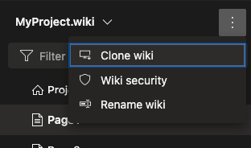 -
In the pop-up select
Generate Git credentialswhich will make a User Name and Password available. Keep these details open for future steps. -
In a new tab, open the same Azure DevOps project
-
Select
Repos->Files -
Select the drop-down next to the Repo name and select
Import repository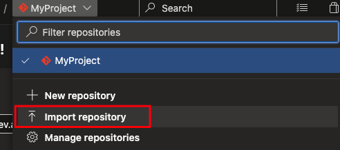 -
Return to the previous tab and in the
Clone repositorypopup, copy the HTTPS URL. This should be used as theClone URLvalue. -
Once you've pasted this into the
Import a Git repositorydialog, you'll also need to copy across the user name and password. -
The name can be changed but it's recommended to shift to snake_case (e.g. myproject_wiki)
-
The result should look like below 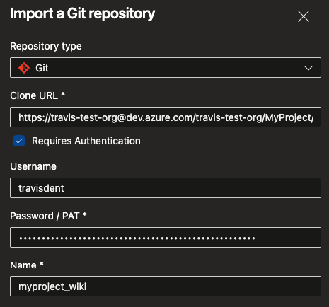
-
Select
Importand wait until the repo has been created.
Create a wiki from this code
-
Return to the first tab and close the pop-up.
-
Select the drop-down next to the wiki name and select
Publish code as wiki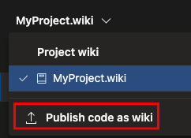 -
Ensure the new wiki repo is selected as well as the main branch (likely
wikiMaster) -
In folder fill in
/and fill in a name 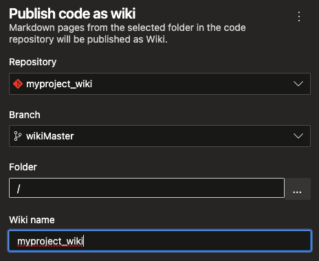 -
Select
Publish -
Congrats! You have a new wiki! 🎉 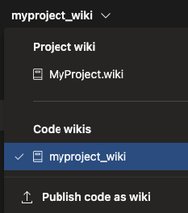
-
But! There's now a duplicate wiki and the default will always be the project wiki. 😞 This is the reason for the next section.
Remove the project wiki
Unfortunately there is no way to remove the project wiki via the user interface. The removal needs to be done as an API call. And the API call needs to be done with authorization.
Get a Personal Access Token (PAT)
-
Select the
User Settingsicon and thenPersonal access tokens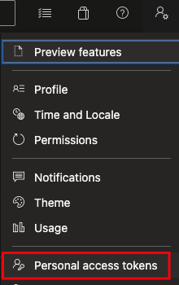 -
Select to add a new token
-
Give the token
Full accessbut limit the Expiration to a single day (you can also remove the PAT after the project wiki has been removed) 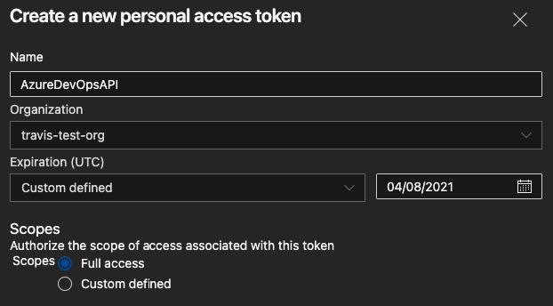 -
Keep the token in an accessible (and safe) place
Delete the Project Wiki with Postman
Note: If you prefer using curl check the next section.
-
Install Postman
-
Add a Collection and a Request
-
Set the URL to
https://dev.azure.com/{Organization}/{Project}/_apis/wiki/wikis?api-version=6.0
-
Select the
Authorizationtab, select TypeBasic Authand set the Password to the PAT 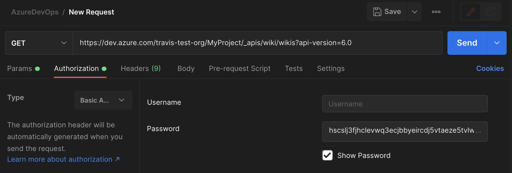 -
Send the request. The response should contain a list of two Wikis. Determine which one is the Project wiki and note down the ID of the wiki. 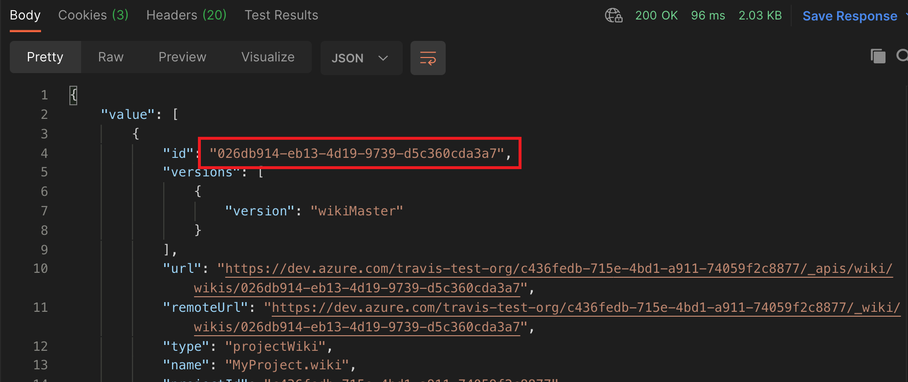
-
Create a new request
-
Change the method from GET to DELETE and set the URL to the following where
repositoryIdshould be the ID of the wiki noted above.
https://dev.azure.com/{Organization}/{Project}/_apis/git/repositories/{repositoryId}?api-version=6.0
- Select Authorization and ensure the Type and Password are the same as for the previous request.
- Select Send.
- Rerun the GET request and ensure that there is now only one wiki.
(Advanced) Delete the Project Wiki with curl
This assumes you have jq installed for formatting the JSON
- List the wikis of the project using the following curl command
bash
curl -u :{Personal Access Token} --location --request GET 'https://dev.azure.com/{Organization}/{Project}/_apis/wiki/wikis?api-version=6.0' | jq
-
Note down the ID of the wiki 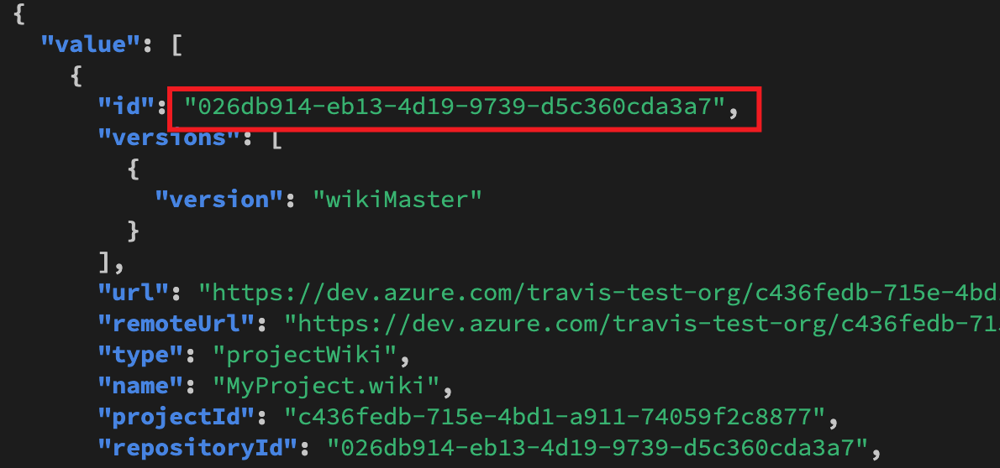
-
Delete the wiki repository using the following curl command
bash
curl -u :{Personal Access Token} --location --request DELETE 'https://dev.azure.com/{Organization}/{Project}/_apis/git/repositories/{Wiki ID}?api-version=6.0'
- Rerun the GET request and ensure that there is only one wiki.